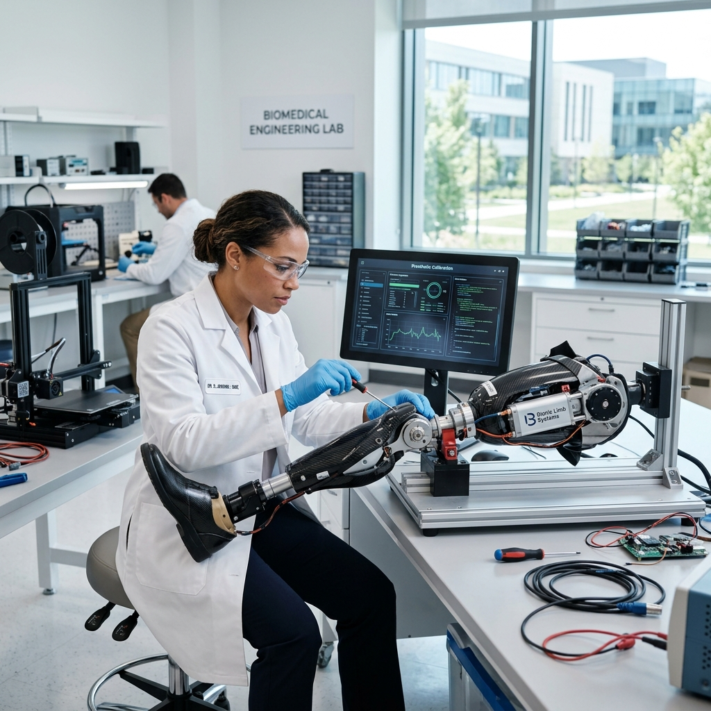
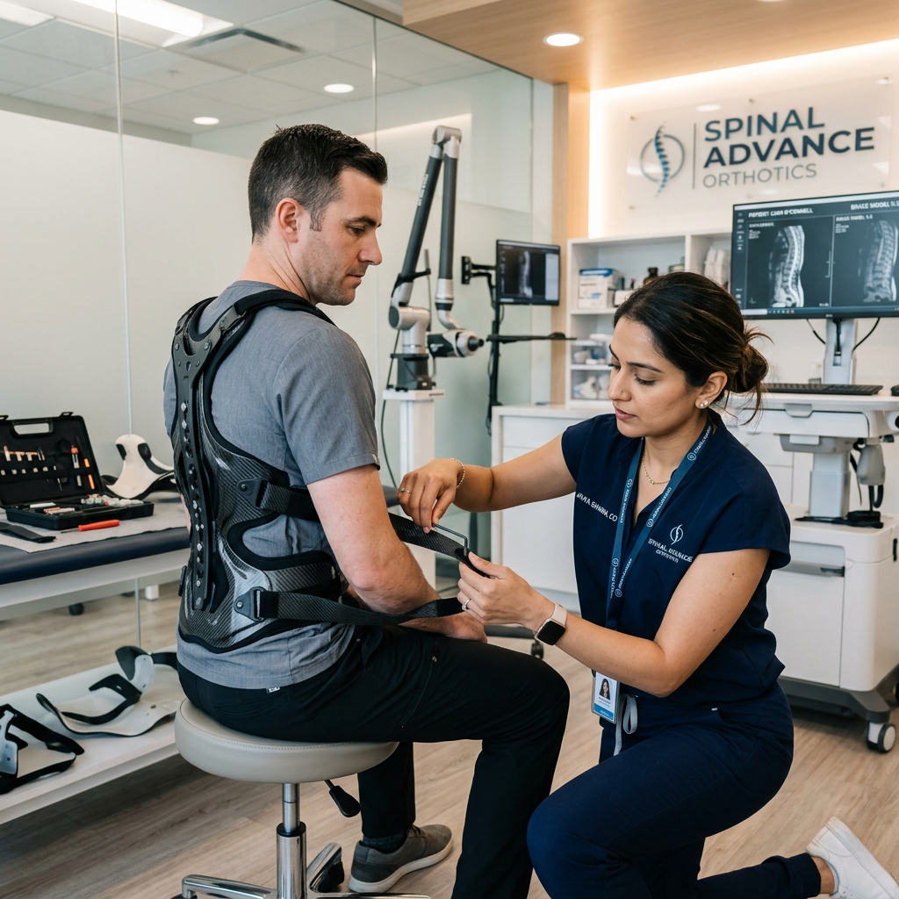
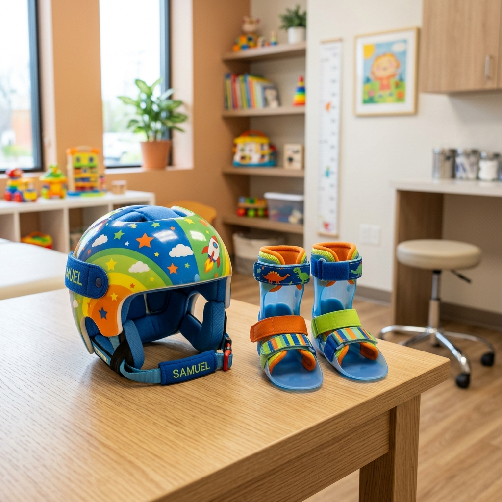
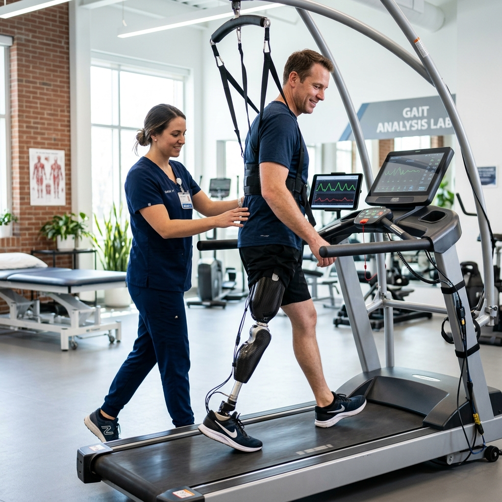

Our Fabrication Services
Explore custom prosthetics, orthotics bracing programs, pediatric alignment solutions, and physical therapist packages.
Bespoke Fitting Options
We manufacture custom-fit devices designed to facilitate normal muscle alignment and posture support.

Prosthetics
Volumetric design of upper-limb and lower-limb sockets. Mechanical joints with micro-processor controllers matching real walk speeds.

Orthotics
Spinal braces, custom foot orthoses, ankle wraps, and support templates built using hypoallergenic polymers.

Pediatric Care
Volumetric alignment monitoring for children, offering lightweight structural shapes, helmets, and customized brace patterns.

Rehabilitation
Biomechanical gait analysis reports. We work alongside your physical therapist to monitor device adaptation progress.
The Path to Restored Mobility
Six precision-engineered stages that transform a clinical assessment into a life-changing custom prosthetic — driven by technology, guided by compassion.

Initial Clinical Consultation
A comprehensive first meeting between the patient, orthopedic physician, and certified prosthetist. Medical history, lifestyle goals, and prescription requirements are reviewed to determine the ideal device pathway.
3D Biometric Scan & Analysis
Contactless structured-light laser scanners generate a sub-millimeter 3D volumetric map of the residual limb in under 45 seconds, eliminating the need for traditional plaster casting.


CAD/CAM Socket Engineering
Bio-mechanical engineers use advanced CAD/CAM software to model the custom socket geometry — analyzing pressure distribution, load vectors, and biomechanical alignment before a single material is cut.
Precision Manufacturing
Our in-house lab uses industrial carbon-fiber 3D printers and CNC robotic milling to produce the device. Medical-grade laminates, hypoallergenic silicones, and titanium fasteners are assembled under sterile conditions.


Clinical Fitting & Alignment
The patient attends an in-clinic fitting where the completed device is trialed and micro-adjusted. Vacuum suspension levels, ankle angle, and joint alignment are calibrated using real-time gait feedback sensors.
Ongoing Patient Recovery Care
A structured post-delivery program of regular wear-checks, socket volume assessments, and structural adjustments ensures the device continues to perform as the patient's residual limb adapts over time.

Journey
Every step engineered for precision. Every decision centered on the patient.
Diagnostic Consultation Packages
We work directly with patients and insurance carriers. Below are standard assessment pathways.
Gait & Mobility Scan
Complete 3D diagnostic sweep, pressure load assessment, and posture analytics report.
- Contactless 3D foot/limb scan
- Dynamic weight load mapping
- Copy of clinical sensor reports
Device Modification Fit
Design and carving of new customized inner socket sleeve, check alignment and adjust joints.
- Vacuum sleeve replacement
- Micro-axial alignment tuning
- Includes two follow-up checks
Physician Consultation
Joint session between patient, prosthetist-orthotist (CPO), and referring physical therapist.
- Prescription requirements review
- Rehabilitation goals alignment
- Direct insurance billing support
Why Choose ApexFlex?
We understand that a prosthesis or orthosis is more than a medical device—it’s an extension of your body. Our laboratory combines bio-mechanical research with clinical compassion.
Precision Structural Fit
Computer-aided alignments prevent skin sores and limb pain.
Rapid Device Turnaround
Dynamic 3D printing delivers sockets to patients within 48-72 hours.
Ongoing Support Program
Includes regular structural alignments as muscle shapes adjust over time.